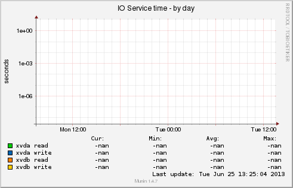
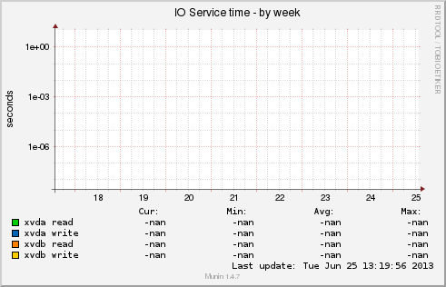
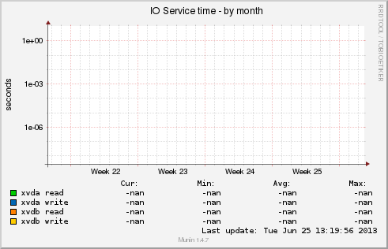
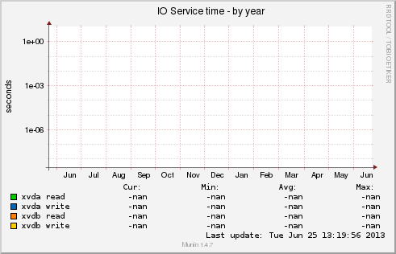

Overview :: phx2.fedoraproject.org :: x86-15.phx2.fedoraproject.org :: iostat ios |
|  |  | ||||||||||||||||||||||||||||||||||||
|  |  | ||||||||||||||||||||||||||||||||||||
|
|||||||||||||||||||||||||||||||||||||
| Overview :: phx2.fedoraproject.org :: x86-15.phx2.fedoraproject.org :: Disk :: | |||||||||||||||||||||||||||||||||||||
| This page was generated by Munin version 1.4.7 at 2013-06-25 13:25:10-0400 (EDT) |